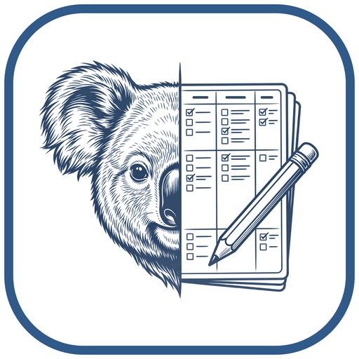

Négy kis alkalmazás, amelyek tudnak egymásról.
Markdown jegyzetek, naptár és Kanban-táblák Windowsra. Az adataid a gépeden maradnak, a határidők pedig maguktól átjutnak egyik alkalmazásból a másikba.
A szálak a valódi kapcsolatokat mutatják: határidők, hivatkozások, indítás.
openNotes
Jegyzetek Markdownban, egy gyorsbillentyűnyire. A mini ablak mindig kéznél van, a teendők nem vesznek el.
- Mini ablak mindig felül – Ctrl+Alt+Shift+O a legutóbbi jegyzetet nyitja bárhonnan.
- Képek vágólapról vagy behúzással, a jegyzetbe ágyazva.
- Prioritás, határidő, emlékeztető – naponta szól, amíg kész nem lesz.
- Mappák és Lezártak: színes mappák, a kész jegyzetek külön, rejtve – kártyanézetben is.
- .openNote fájlba exportálva egyben elküldhető; Markdown export is van.
Próbáld ki: írj a bal oldalba, pipáld ki a teendőt, adj határidőt – az a naptár demóban is megjelenik.
openCalendar
Nap, hét, hónap és napló nézet. Ismétlődő események, több emlékeztető – és mellettük a jegyzetek és kártyák határidői.
- Ismétlődés naponta, hetente kiválasztott napokon, havonta vagy évente.
- Emlékeztetők kezdéskor, előtte percekkel, órákkal vagy napokkal – szundival.
- Több naptár saját színnel; .opencalendar export és import.
- openNotes és openKanban határidői élőben frissülve, kattintásra megnyílnak.
Kattints egy napra, és adj hozzá eseményt. A lila jelek jegyzetek, a kékek Kanban-kártyák.

openKanban
Workspace-ek, táblák, oszlopok és kártyák – úgy, ahogy a Trellóban megszoktad, csak a saját gépeden.
- Húzd és ejtsd kártyák és oszlopok között.
- WIP limit: tele oszlopba nem fér több kártya.
- Kész oszlop: az odahúzott kártya magától kész.
- Címkék, határidő, ellenőrzőlista; teljes workspace egy .openKanban fájlban.
Húzd a kártyákat. A „Folyamatban” oszlopba legfeljebb 3 fér. A határidős kártyák a naptárban is ott vannak.
openLauncher
Egy helyen indítod, telepíted, frissíted és távolítod el az alkalmazásokat. Internet nem kell hozzá: a telepítők vele érkeznek.
- Közös telepítő: teljes, csak launcher, vagy te választod ki az appokat.
- Rendszergazda nélkül telepít, felhasználónként; céges csendes telepítés is megy.
- Eltávolításkor az adataid megmaradnak.
Telepíts fel egy alkalmazást, aztán indítsd el.
Külön is jók. Együtt kevesebbet kell fejben tartanod.
Egyik alkalmazás sem kell a másikhoz. Ha mégis mellettük van, ezek történnek maguktól:
- Jegyzet → naptár. A határidős jegyzetek megjelennek a naptárban, emlékeztetővel együtt.
- Kártya → naptár. A határidős kártyák külön naptárként látszanak; kattintásra a kártya nyílik meg.
- Kártya → jegyzet. Egy kártyához jegyzet kapcsolható, ami egy kattintással megnyílik.
- Launcher → mind. Indítás, telepítés, frissítés és eltávolítás egy ablakból.
Letöltés
A legtöbbször a közös telepítő kell: benne van a launcher és mindhárom alkalmazás, telepítéskor választhatsz.
openSuite telepítő letöltéseWindows 10 (1809) vagy 11, 64 bit. .NET nem kell. Rendszergazdai jog nélkül is települ.
A telepítő nincs digitálisan aláírva, ezért a Windows első indításkor figyelmeztethet: „További információ” → „Futtatás mindenképp”.
Céges, csendes telepítés
openSuite-Setup-x64.exe /VERYSILENT /COMPONENTS="launcher,opennotes,opencalendar,openkanban"
Csak egy alkalmazás kell?
Az egyes telepítők is ott vannak a kiadásnál: összes kiadás.
Forrásból
git clone … && cd open && .\build.cmd